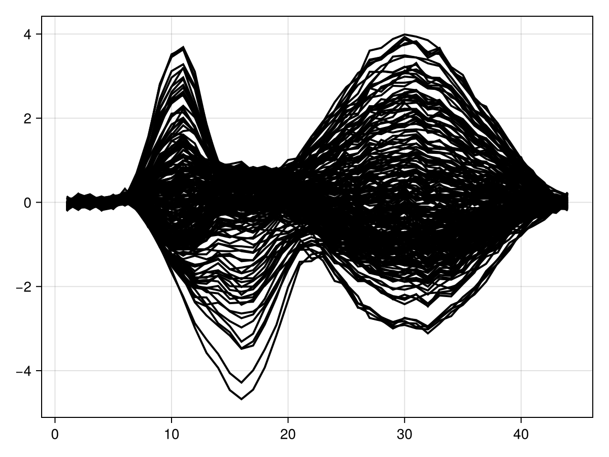
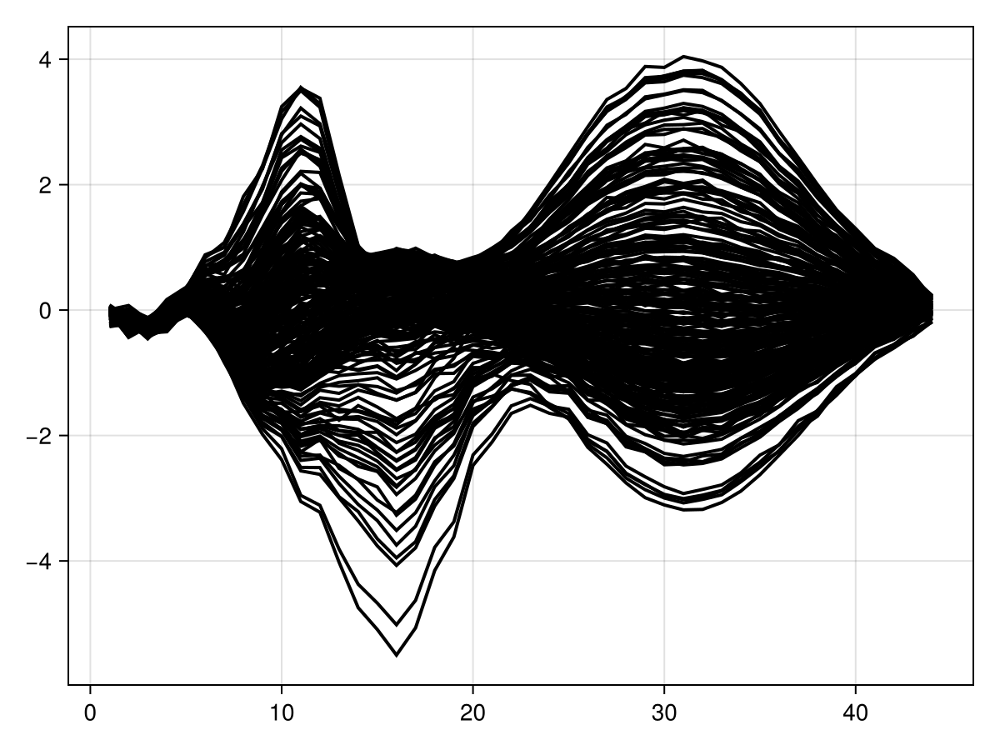
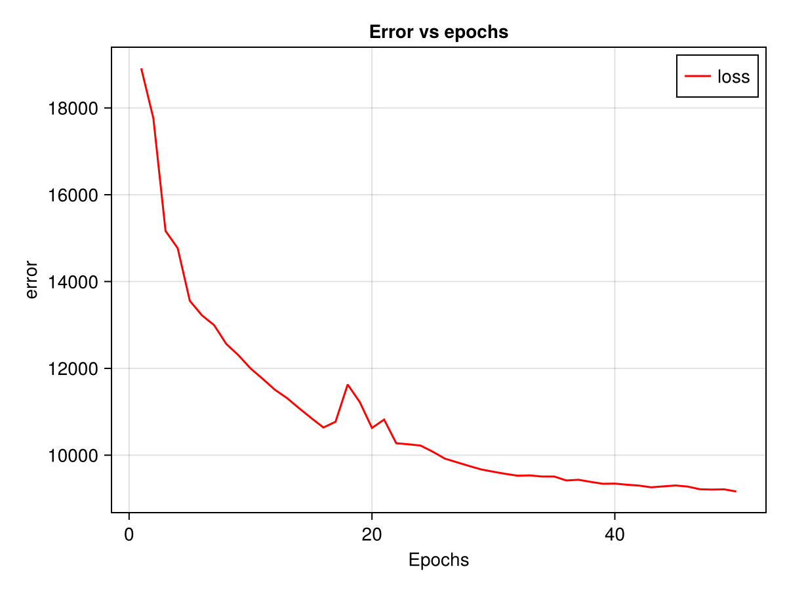

tutorial.jl Notebook Documentation
Overview
This tutorial.jl notebook performs data simulation, trains a deep recurrent encoder model, and visualizes the results. It includes data preparation, model training, and evaluation steps.
Dependencies
The notebook uses the following Julia packages:
Pkgfor package managementRandomfor random number generationPlutoLinksfor linking Pluto cellsLuxandLuxCUDAfor deep learning (CPU and GPU support)CairoMakieandPlotsfor visualizationStatisticsandStatsModelsfor statistical modelingStableRNGsfor reproducibilityDeepRecurrentEncoderfor neural network modeling
Notebook Workflow
1. Package Activation
using Pkg
Pkg.activate("../../docs")This activates the package environment located in the ../../docs directory.
2. Importing Required Libraries
using Random, PlutoLinks, Lux, LuxCUDA, CairoMakie, Statistics, StatsModels, Plots, StableRNGsThese libraries are used for data handling, model training, and visualization.
3. Importing Custom Deep Learning Module
@revise using DeepRecurrentEncoderThis imports the DeepRecurrentEncoder module for recurrent neural network training. The @revise tracks for changes done in the module to refresh the cells in the notebook
4. Loading Test Data
testdata = @ingredients("../testdata.jl")This loads test data from testdata.jl.
5. Random Number Generator
rng = StableRNG(1)A stable random number generator to simulate data from the UnfoldSim.jl package (<Link to unfold sim>)
6. Defining Formula for Model
f = @formula 0 ~ 0 + sight + hearingDefines a statistical formula to define the stimuli effects given to the model
7. Simulating Data
data, evts = testdata.simulate_data(rng, 100; sfreq=100, sight_effect=1);Simulates samples of data using the random number generator and a given sight_effect. This controls on how much the "sight" stimulus influences the final EEG signal
8. GPU Toggle
use_gpu = falseA boolean flag to determine whether to use a GPU for training.
9. Model Training
x_train_data, train_evts, x_test_data, test_evts = train_test_split(data, evts)
data_input = Float32.(x_train_data[:, 1:end÷2*2, :]) |> x -> use_gpu ? CuArray(x) : x
loss = MSELoss()
dre, ps, st, loss_train, loss_opt = fit(DRE, data_input, f, train_evts; n_epochs=10, lr=0.1, batch_size=256, loss_opt=loss, hidden_chs=25)- Splits the data into training and test sets.
- Converts training data to
Float32format and optionally moves it to GPU (in case use_gpu) is true - Defines mean squared error loss (Customizable).
- Trains the deep recurrent encoder model using given epochs, a given learning rate, and a given batch size.
10. Model Testing
data_test = Float32.(x_test_data[:, 1:end÷2*2, :])
loss_pred, data_pred = DeepRecurrentEncoder.test(dre, data_test, f, test_evts, ps, st; subset_index=1:10, loss_function=mse)- Converts test data to
Float32format. - Evaluates the trained model on the test dataset.
11. Visualization
Input Data Visualization
series((data_test[:, :, 10]); solid_color=:black)
Prediction Visualization
series(data_pred[:, :, 10]', solid_color=:black)
Training Loss Visualization
f_ = Figure()
ax1_ = Axis(f_[1, 1], xlabel="Epochs", ylabel="error", title="Error vs epochs")
lines!(ax1_, loss_train, label="loss", color=:red)
axislegend(ax1_)
f_- Creates a figure to plot training loss over epochs.
- Uses
CairoMakieto visualize the error reduction.

Summary
This notebook:
- Loads and simulates time-series data.
- Defines and trains a deep recurrent encoder model.
- Evaluates the model on test data.
- Visualizes the input data, predictions, and training loss trends.